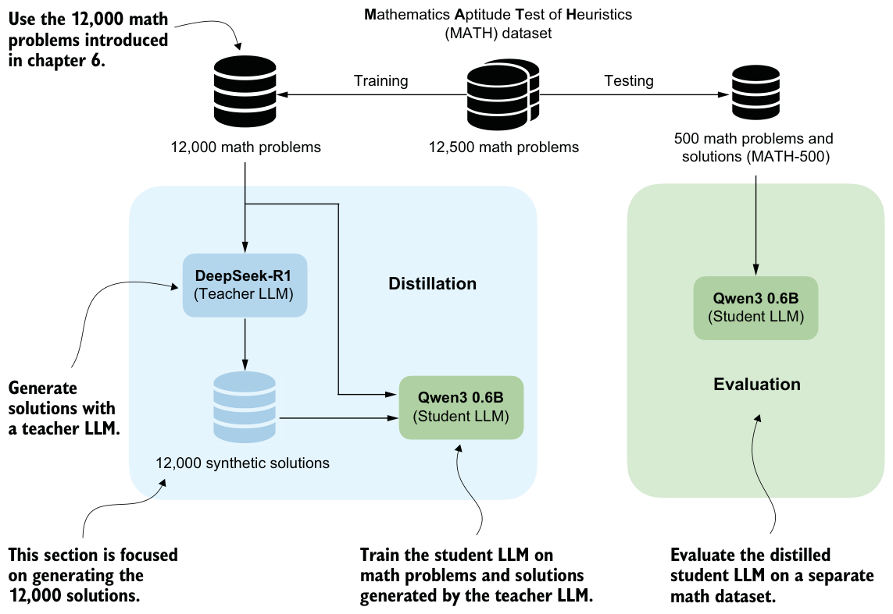
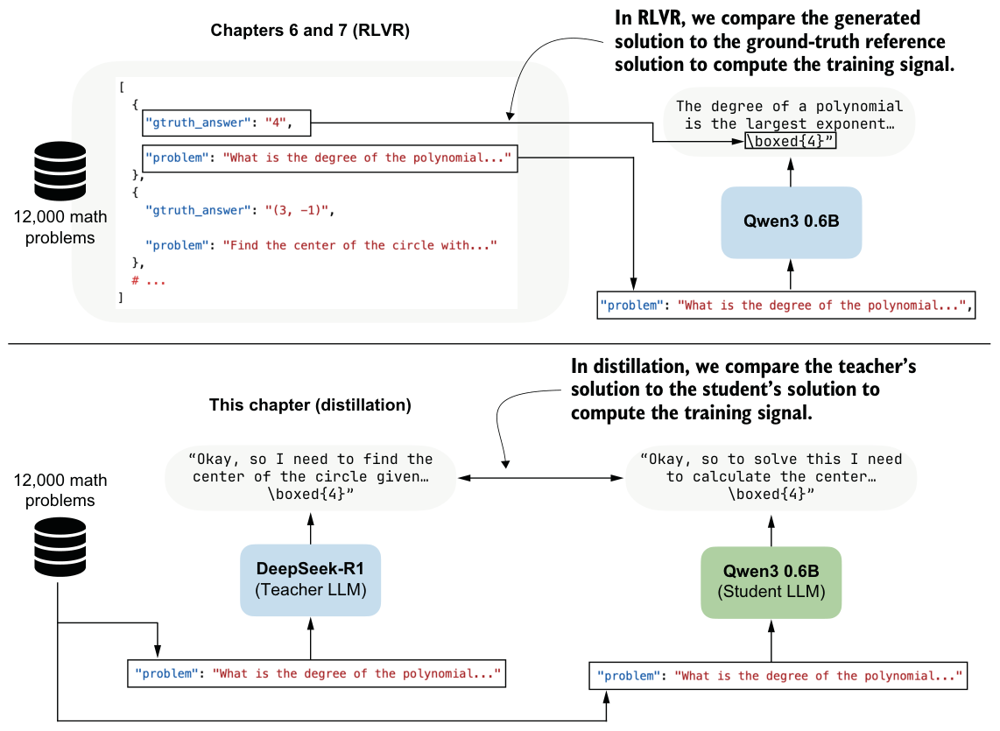
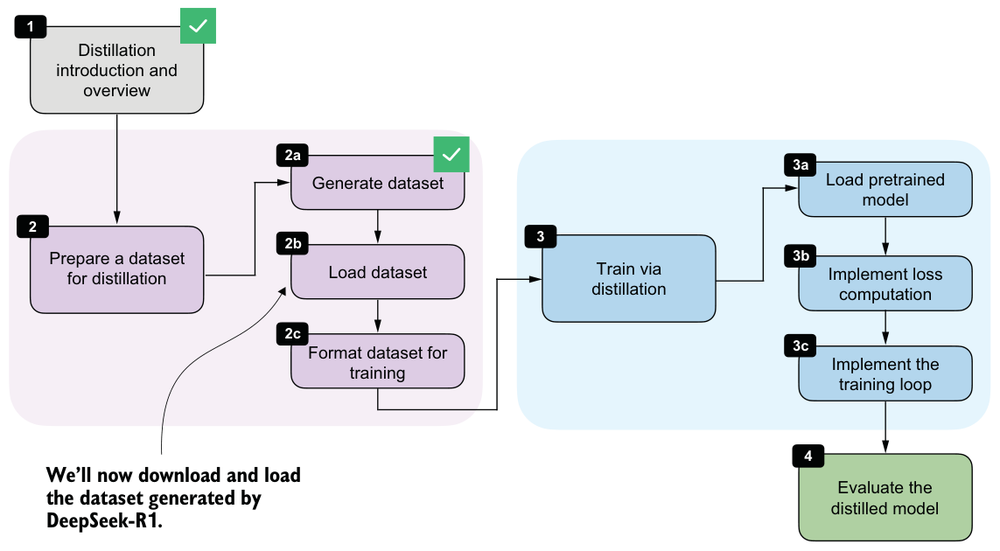

8.2Generating a dataset for reasoning distillation
The first practical step in hard distillation is to create a dataset for training the student model. For us, the student will be the Qwen3 0.6B base model that we used in earlier chapters.
To build the dataset, we’ll use the 12,000 math problems from the MATH split that do not overlap with the MATH-500 evaluation set. These are the same 12,000 problems we used in chapters 6 and 7 for RLVR. Instead of sampling multiple student responses and computing rewards, we’ll now feed these problems to an existing reasoning model, DeepSeek-R1 (the teacher model), and collect its responses as training targets. This setup is illustrated in figure 8.4.

In the RLVR setup in chapters 6 and 7, we trained the Qwen3 base model to produce the correct solution, and we then used a verifier to compare the model’s final answer with the reference answer. The verifier produced the reward signal.
In distillation, the supervision is more direct. Instead of comparing the student’s answer with the reference solution using a reward function, we’ll compare the student’s generated tokens with the teacher’s generated tokens, as shown in figure 8.4. The teacher’s response becomes the target sequence. This contrast with RLVR is illustrated in more detail in figure 8.5.

A practical advantage of distillation is that we can generate the teacher dataset ahead of training the student.
Because generating teacher answers for all 12,000 math problems can be time and resource intensive, I created the dataset using the 671-billion-parameter DeepSeek-R1 model hosted via OpenRouter. The full data generation cost was approximately $50 in API usage. We’ll load this pregenerated dataset, so you do not need to generate it yourself to follow along. If you are curious about the data-generation process, the code and usage instructions are available in the supplementary materials at https://mng.bz/vZvx.
8.3Loading the MATH training dataset for distillation
We’ll now load the distilled MATH dataset generated by DeepSeek-R1 in the previous section. Each example contains a math problem together with a reasoning trace and final answer, which we can use as targets for supervised fine-tuning. This step is highlighted in figure 8.6.

I made the dataset available via the Hugging Face Hub rather than GitHub because the JSON file is approximately 107 MB, which exceeds GitHub’s 100 MB file-size limit: https://huggingface.co/datasets/rasbt/math_distill. The following helper function downloads the selected partition if it is not already cached locally and returns it as a Python object.
import json
import requestsfrom pathlib import Path
def load_distill_data(
local_path=None,
partition="deepseek-r1-math-train",
save_copy=True,
):
if local_path is None:
local_path = f"{partition}.json"
local_path = Path(local_path)
url = (
"https://huggingface.co/datasets/rasbt/math_distill"
"/resolve/main/data/"
f"{partition}.json"
)
backup_url = (
"https://f001.backblazeb2.com/file/reasoning-from-scratch/"
f"MATH/{partition}.json"
)
if local_path.exists():
with local_path.open("r", encoding="utf-8") as f:
data = json.load(f)
size_kb = local_path.stat().st_size / 1e3
print(f"{local_path}: {size_kb:.1f} KB (cached)")
return data
assert partition in (
"deepseek-r1-math-train",
"deepseek-r1-math500",
"qwen3-235b-a22b-math-train",
"qwen3-235b-a22b-math500",
)
try:
r = requests.get(url, timeout=30)
r.raise_for_status()
except requests.RequestException:
print("Using backup URL.")
r = requests.get(backup_url, timeout=30)
r.raise_for_status()
data = r.json()
if save_copy:
with local_path.open("w", encoding="utf-8") as f:
json.dump(data, f, indent=2)
size_kb = local_path.stat().st_size / 1e3
print(f"{local_path}: {size_kb:.1f} KB")
return dataThe output is as follows:
deepseek-r1-math-train.json: 107538.0 KB
Dataset size: 12000Let’s inspect one of the training examples so we can understand the dataset structure and see exactly which fields the teacher-generated data contains. For illustration, we’ll use the fifth training example:
from pprint import pprint
pprint(math_train[4])The printed output is as follows:
{'gtruth_answer': '6',
'message_content': 'Sam worked \\( x \\) days and did...'
'message_thinking': "Okay, let's see. Sam was hired for 20 days...'
'problem': 'Sam is hired for a 20-day period...'
}Each dataset entry contains the math problem itself (problem), the ground-truth answer (gtruth_answer), the teacher’s reasoning trace in message_thinking, and the final answer in message_content. For distillation, the two most important fields are the reasoning trace and the final answer, because together they form the target text that the student should learn to reproduce.
The format_distilled_answer function in the following listing combines these two fields into a single training target by placing the reasoning trace inside <think>... </think> tags and then appending the final answer.
def format_distilled_answer(entry):
content = str(entry["message_content"]).strip()
if not content:
raise ValueError("Missing non-empty 'message_content' field.")
thinking = str(entry["message_thinking"]).strip()
return f"<think>{thinking}</think>\n\n{content}"
print(format_distilled_answer(math_train[4]))This is the printed output:
<think>Okay, let's see. Sam was hired for 20 days. Each day he works, he
earns $60...So answer is 6 days not worked.</think>
Sam worked \( x \) days and did not work \( y \) days. We know:...
Sam did not work \(\boxed{6}\) days.As discussed in the previous chapter, the <think></think> tokens are optional. They are not required for distillation itself, though they can be useful for clearly separating the reasoning trace from the final answer. This separation becomes helpful when implementing user interfaces that hide the verbose reasoning trace from end users. Some systems, including products such as ChatGPT, may display only the final answer while hiding portions of the internal reasoning. Teaching the model to use explicit <think> tags makes these traces easier to parse and handle.
Since the dataset also contains ground-truth labels, we can measure how accurate the teacher model is on this set. For convenience, we’ll use the evaluate_json.py script from chapter 3’s supplementary materials, which compares generated answers with the reference answers using the verifier implemented in that chapter. This will give us a quick estimate of DeepSeek-R1’s performance on the distillation dataset:
from reasoning_from_scratch.ch07 import download_from_github
_ = download_from_github(
"ch03/02_math500-verifier-scripts/evaluate_json.py"
)After downloading the script via the preceding Python code, we can run it in a code terminal as follows:
uv run evaluate_json.py \
--json_path "deepseek-r1-math-train.json" \
--gtruth_answer gtruth_answer \
--generated_text message_content(If you don’t use uv, replace uv run with python.)
This is the output:
Accuracy: 90.6% (10871/12000)While the model is not perfect, 90.6% is still a relatively high level of accuracy. On the MATH-500 test set from chapter 3, it achieved 91.2% accuracy, which is much higher than the Qwen3 0.6B base model we are going to train (15.2% accuracy on MATH-500) and the official Qwen3 0.6B reasoning reference model (50.8% on MATH-500).